Cascading Style Sheets
- Describing the look and feel of an HTML document
- Designed to enable the separation of document content from document presentation
- Allow the same markup page to be presented in different styles for different render methods
Applying
- Inline - style attribute to the relevant tag
- Internal - defined in the head section of an HTML page
- External - external file with .css extension
Syntax

#id vs .class
-
ID can be used to identify one element
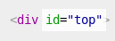->
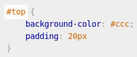 -
class can be used to identify more than one element
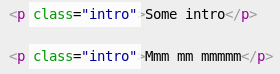->
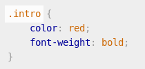
Cascading
The CSS cascade assigns a weight to each style rule. When several rules apply, the one with the greatest weight takes precedence
Cascade Priority

Inheritance
Inheritance is where specific CSS properties are passed down to descendant elements
Inheritance
Only properties that make our job easier are inherited such as:
- Text-related (font, line-height, text-align etc.)
- List-related (list-style, list-style-type, list-style-image etc.)
- Color
Grouping and Nesting
Grouping
Don't repeat selectors. Use comma and group them!
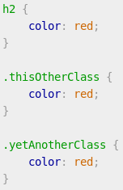
->
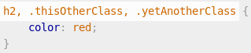Nesting
How to apply styles to the common element placed in a specific container?
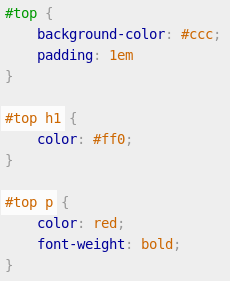
Colors
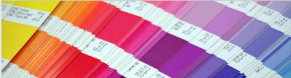
Possible values
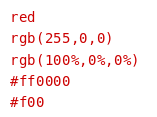
HSL and RGBa
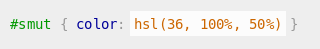 
Borders and Shadows
Borders
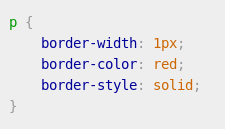
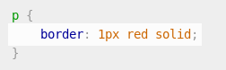
Shadows
Box Shadow
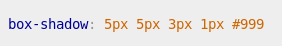 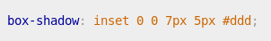Text Shadow
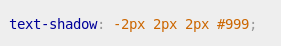Text Effects
- text shadow
- text overflow
- word wrapping
Text Shadow
Text Overflow
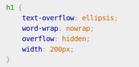
Word Wrapping
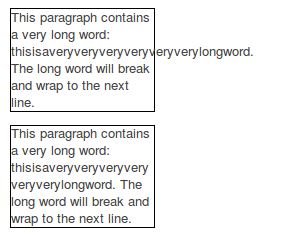
Pseudo-classes
A CSS pseudo-class is a keyword added to selectors that specifies a special state of the element to be selected

Pseudo-elements
Just like pseudo-classes, pseudo-elements are added to selectors but instead of describing a special state, they allow you to style certain parts of a document
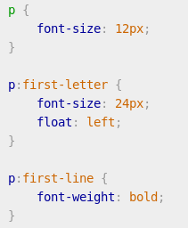
Before and After content
The before and after pseudo elements are used in conjunction with the content property to place content either side of a box without touching the HTML
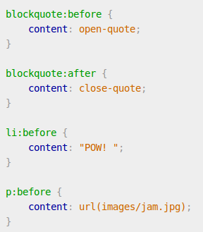
Shorthand properties
Some CSS properties allow a string of values, replacing the need for a number of properties. These are represented by values separated by spaces
Shorthand properties - syntax
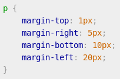
->
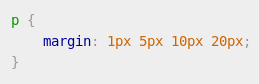Display
The display CSS property specifies the type of rendering box used for an element
display: inline;
Boxes that are displayed inline follow the flow of a line. Only padding and margin can be applied.
display: block;
Makes a box standalone, fitting the entire width of its containing box, with an effective line break before and after it
display: inline-block;
Generates a block element box that will be flowed with surrounding content as if it were a single inline box
display: [other types];
There are many possible types that allow to display elements in a specific way:
- display: none;
- display: table;
- display: list-item;
- display: flex;
- display: grid; (experimental)
- etc.
Positioning
The position property is used to define whether a box is absolute, relative, static or fixed
position: static;
static is the default value and renders a box in the normal order of things, as they appear in the HTML
position: relative;
relative is much like static but the box can be offset from its original position with the properties top, right, bottom and left
position: absolute;
absolute pulls a box out of the normal flow of the HTML and delivers it to a world all of its own. The absolute box can be placed anywhere on the page using top, right, bottom and left
position: fixed;
fixed behaves like absolute, but it will absolutely position a box in reference to the browser window as opposed to the web page, so fixed boxes should stay exactly where they are on the screen even when the page is scrolled
Floating
Floating a box will shift it to the right or left of a line, with surrounding content flowing around it
float: left;
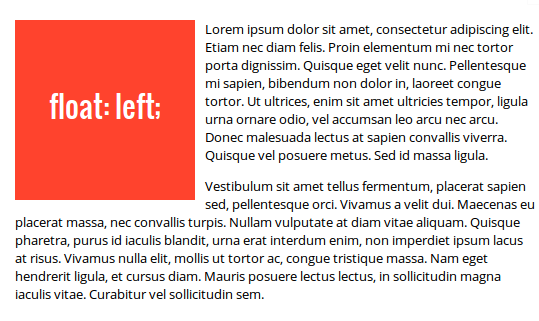
float: right;
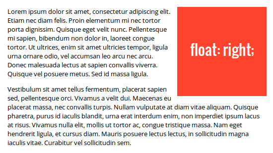
clear: left/right/both;
If you do not want the next box to wrap around the floating objects, you can apply the clear property
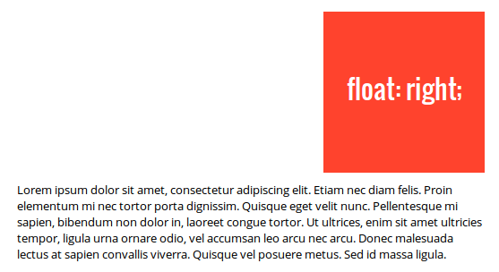